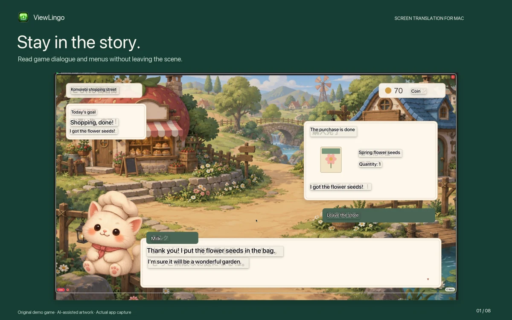
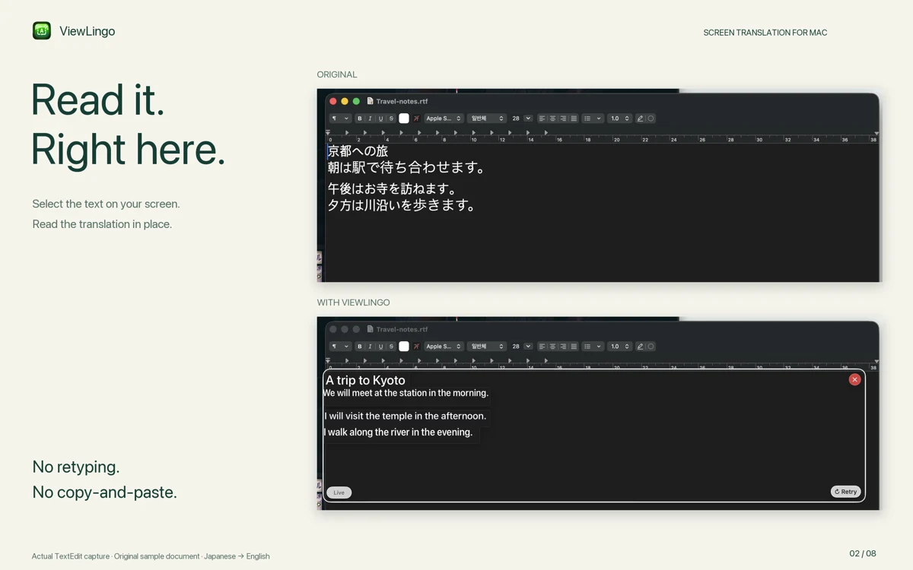
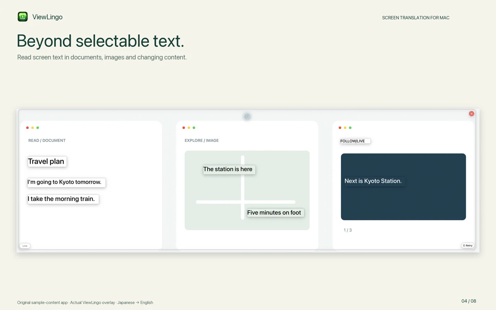

Stay in the game
Dialogue and item details, translated over an original demo game.
Screen translation for Mac
Select text in a game, image or document. Read the translation right where it appears.
One-time purchase · No subscription
macOS 15+ · Download language packs once for offline use.
Draw around the screen text you want to read.
See the translation over your existing window.
Follow changing screen text while you keep watching or playing.

Dialogue and item details, translated over an original demo game.

Original Japanese notes and the actual English translation in TextEdit.

Select text from an original sample containing several types of screen content.
Translates visible text, not spoken audio. Language availability depends on macOS. Small, blurred or decorative text can affect results.
Drag a viewfinder across the article, the same way you would on your Mac.
Illustrated interaction demo — not a live translation engine.
ViewLingo supports languages available in both Apple text recognition (OCR) and Translation on your Mac. Available languages depend on your macOS version.
Language packs download once from System Settings › General › Language & Region › Translation Languages. After that, translation runs entirely offline.
To see the exact list for your Mac, open ViewLingo's settings — it reads the languages from macOS directly.
Create a viewfinder over any text on your screen. Press fn + Control + Option to start translating - websites, documents, videos, or apps.
Translations are drawn over the original text, keeping layout and reading order intact. No switching between apps.
Check ViewLingo settings for the languages available on your Mac. Download the required language packs before translating offline.
No round-trips to a server. Translation runs locally on your Mac — without sending your screen content to a server.
Real-time translation for continuously changing content like videos or live streams. Made for YouTube, presentations, and other changing content.
Natively handles vertical text in Japanese, Chinese, and Korean. Translations render in the correct writing direction automatically.
Translations automatically adjust font size for optimal readability, even when translated text is longer than the original.
Dialogue and item details, translated over an original demo game.
Draw around the screen text you want to read.
Your content never leaves your Mac. All translations happen on-device using Apple's built-in translation engine.
Every translation runs on your Mac. No internet connection required, so confidential documents and private conversations stay with you.
The Mac app has no analytics or tracking. We do not receive your screen content or translations.
Powered by Apple's neural translation technology, running entirely on your device.
Available on the Mac App Store.
Select text in a game, image or document. Read the translation right where it appears.
Requires macOS 15.0 or later